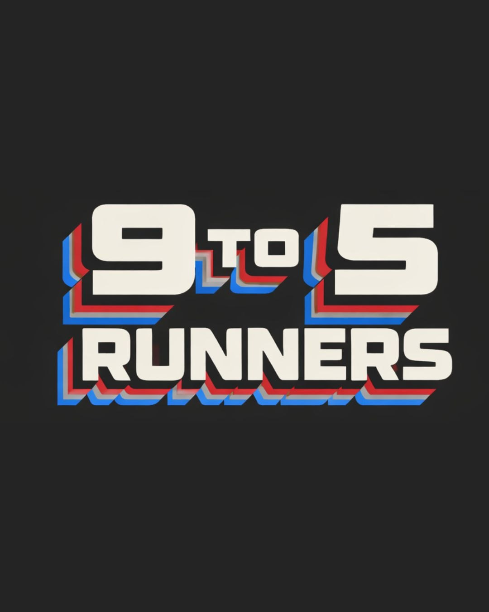
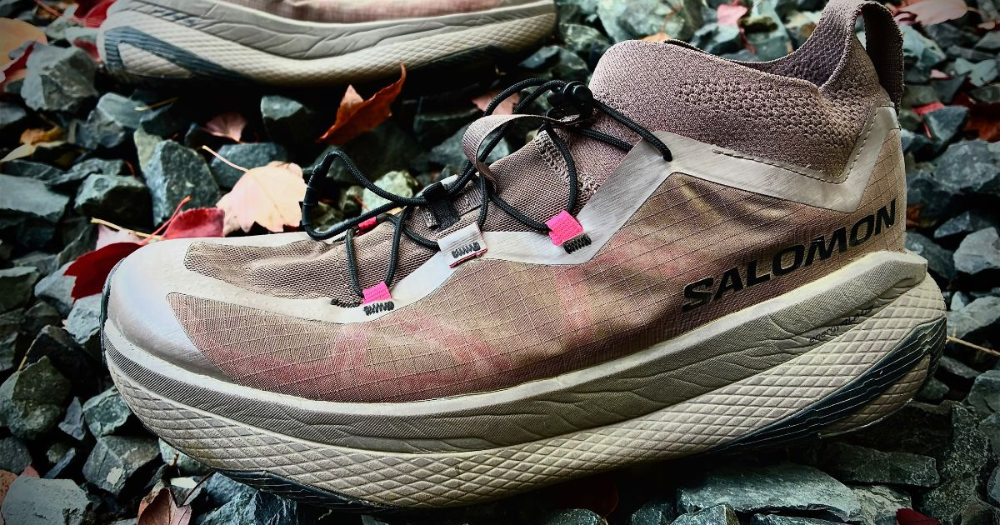
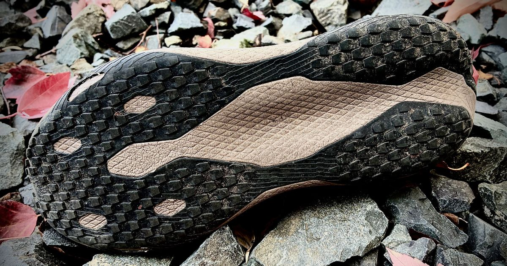
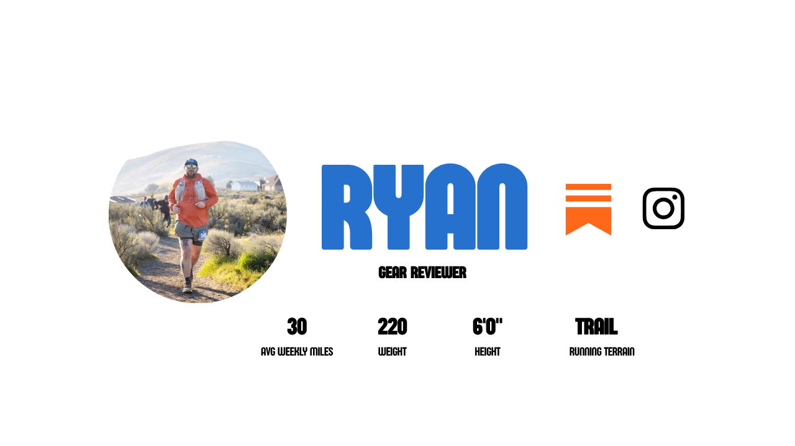

Buy If
- You can find it on sale right now (around $175). Totally worth it.
- You love a buttery-soft foam that is also responsive.
- You want a shoe you can just cruise in for long miles.
- You are sold on the gravel shoe category.

Ryan puts 32 miles on Salomon's GRVL Concept, testing its buttery-soft ride across gravel, roads, and trails.
Back to ShoesThe first-ever shoe demo I attended at my local running shop was for the Salomon DRX DEFY GRVL shoe. This was my introduction to the gravel category, and what really got me thinking about whether this category was just a fad or here to stay. 3-4 years later, I can truly say that it’s indeed here to stay. The gravel/road-to-trail/hybrid/whatever you want to call it category of the sport has absolutely exploded. Salomon has been a pioneer of the gravel category, bringing some of the best models out there. The mountain adventure brand sure knows how to craft footwear for all conditions. In 2026, Salomon brings us the GRVL Concept…a premium race day shoe built for the likes of those tackling Western States and more mellow-style courses. I decided to pick this shoe up on my own dime from my local running store (shoutout Snoqualmie Running), and just wrapped up enough miles to have some thoughts on this wild shoe. Dive in with me below.

When I first logged some miles in the GRVL Concept, the most obvious thing I noticed was the way the midsole felt. It’s extremely soft and buttery, but it does give some energy return back. It has a really nice level of bounce. Totally different shoes, but I’ve been running a lot in the ASICS Superblast 3 and the Topo Specter 3, two shoes with great responsiveness, and the way I would characterize the GRVL Concept is much different. It’s like the moment your foot lands, it feels like it’s absorbed by butter, and when it hits the inflection point before your foot rolls and transitions to the next foot landing, it springs back some. I think this has to be from the full-length energyBLADE carbon plate nestled in the shoe. It creates a very, very fun ride. On smooth gravel trails, I found this shoe could handle slow, long miles, but when you wanted, it could also pick up the pace. It’s like the faster your cadence, the more energy return you get from the foam and plate. This also creates the fun factor of this shoe. Truly, this shoe is just so fun to reach for. It’s different from so many others. It’s a very different feel from the Aero Glide GRVL shoe from Salomon. That’s not to say the Aero Glide doesn’t have the fun factor. It absolutely does because of the bounce you get from the Optifoam, but the Concept…it’s a whole other level of fun.
The Salomon quick-lace system is, of course, on this shoe, and I really like it. It’s pretty much the same as what you’ll find on the Aero Glide and Blaze models. Extremely easy to cinch it down and get a great lockdown. In my 30+ miles, I never once had to stop to readjust the lacing. It was completely set it and forget it.
The GRVL Concept follows the latest trend in the trail world, and that is designing the shoe with a built-in bootie, or gaiter. We are seeing this on more and more models as the years go on. It seemed like the HOKA Tecton X 3 was one of the first to do it, but now everyone is following suit. Even a gravel shoe now. Does a gravel shoe actually need the built-in bootie? I don’t know…but I really like it. If anything, think beyond its function of keeping debris out, which it certainly does, but it also helps secure your ankle, and I find it adds some security with the fit. It doesn’t suffocate my ankle at all, but in fact, hugs it gently. I really like this feature.

Alright, you might see this one coming, but for a shoe that has a 46mm stack height and a buttery-soft midsole, you’re going to lose out on some stability. Now, I think having the carbon plate certainly helps with some stability, but I would have actually opted for a perimeter plate or an X-shaped plate. From my understanding, it’s just a standard full-length plate. If you had the X-shape or the perimeter plate, you would get some more stability. However, stability on flat gravel trails is just fine. I had zero issues. It was only when I took the shoe on the next step up from gravel trail to a section of rocky singletrack that things felt sketchy. I had to slow myself down so I wouldn’t misstep and break an ankle. I made it through, but this shoe is definitely meant to be kept on the chill fire roads.
This leads me into the next area I wanted to call out, which is the versatility of the shoe. I have had some amazing luck taking the Aero Glide GRVL onto some actual serious trail, and it holds its own. With the GRVL Concept, I just find the versatility factor is lower. So just be aware of this fact: if you’re thinking, “Oh, I want to get this for a do-it-all shoe and test the bounds of what I can take this thing on,” I wouldn’t do that. This shoe is going to shine on the chill gravel roads, fire roads, smooth singletrack, buffed-out trails, as well as the roads. This shoe does do great on the road.
This isn’t necessarily a bad thing, but a point that I question about this shoe is that, according to the specs, it says the lugs have a depth of 2.5mm. Dude…there’s no way. I think these things would be at most 1mm or 1.5mm…there’s not a lot there. I have a hard time believing they are 2.5mm.
Lastly, I’m going to bundle these two together, but for $250, I wish we got a Matryx upper. According to Salomon, they call this upper a “breathable knit design.” Maybe we are so used to the S/Lab version of shoes coming in our beloved Matryx upper, but at this premium price, I expected it. Speaking of the upper, my last and final qualm is more of a superficial one, but what’s up with this colorway? It’s not a very good-looking shoe. In fact, I have had more conversations about the dictate of this colorway with numerous folks than I have over any other shoe throughout the years. It’s a silly thing to call out, but I just don’t get how this thing made it onto the production line!
The Salomon GRVL Concept is an insanely fun ride. It’s like the trail/gravel runner’s equivalent of moon boots. Give me 46mm of super-butter Optifoam+ and let’s have ourselves a hell of a time out on the trail. While the Concept comes in at a premium price of $250, lining it up with most race day shoes today, it finds its own uniqueness that can feel like race day…but also like every day. All feedback and my experience aside, the thing I LOVE about what Salomon is doing is in the title. “Concept.” I truly believe this is Salomon’s playground, and they are having fun with it. The GRVL Concept is the brainchild of their fun and innovative trials. It’s just a concept. It’s not meant to be taken too seriously, and that’s why I love it. Like I said, the fun factor of this shoe is off the charts, so if you’re looking for a shoe that’s going to give you a good time, can you put a price tag on that?
Oooooph. Dreaded this part of the review if I’m being real with you. $250 is a lot of cash for any shoe. Now, let me restate that. $250 is an insane amount of cash for a gravel shoe. Especially when Salomon has the Aero Glide GRVL out, which is hands down one of the best shoes on the market for only $160, $90 less. When I put these two side by side, it’s a tough sell. If I was strapped for cash, I would pick the Aero Glide GRVL easily. Now, I don’t want to scapegoat the retail price here, but in my short research, I saw that a lot of sites are offering a sale on the GRVL Concept for around $175. In this case, it’s absolutely, no questions asked, worth it.
This review contains an affiliate link. If you purchase through our Running Warehouse link, we may earn a small commission at no additional cost to you. This helps support 9 to 5 Runners and allows us to keep producing independent reviews.
This review reflects Ryan's honest opinions after 32 miles of testing. No brand had any input into this review or its conclusions.
